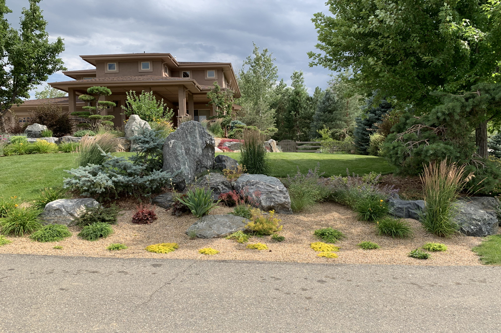

Starting with a discussion about how you’d like to use your yard we can design your outdoor space to fit your lifestyle.
For The DIY’er
We offer step by step details from design, procuring materials, setting up deliveries, installation tips and the tools needed to complete your project from A to Z.
Erin Howell
We are extremely happy with the job done by Stix & Stones. Work was completed start to finish in two days including setting up the fountain. We love sitting out front in the evening with the gentle sound of the water fountain. I would certainly recommend Stix & Stones and we plan on having them again when we replace our old patio.
Jason Widegren
Brad Edwards and his expert team at Stix & Stonz completely transformed our backyard by putting in a beautiful stone patio, two large stone planters, a cedar privacy fence, and some associated landscaping. Brad is, by far, the best contractor we have ever worked with. Not only is his craftsmanship top-notch, but he is a pleasure to work with. He really went above and beyond to make sure that we were happy with each stage of the project. Brad also did some extra work for us without charge, such as fixing a side fence and cutting up a tree for firewood. Brad and his crew were very respectful of our family and our property. They were polite and always took their shoes off when coming into our home to avoid tracking in dirt. In all, we had a great experience, and we can’t wait to have them start on the front yard!
Mike Beutz
I am writing again for the extraordinary work done by Brad and his crew in building my entry walkway last fall. Brad's ideas and his knowledge of a wide variety of local stone products assured that we would have a finished project that would enhance our home for years to come. No one comes to our home without commenting on the stone walkway that takes them to the front door. I had considered building some form of Paver pathway as a DIY project. I probably would have saved a few dollars, and it would have been an improvement to the aging walk that I built in the eighties. But, it would not have come close to what he did for us, and it would not have added value to our property in the way that his work has done. From that perspective, his work has cost less than me doing it myself, and the finished product is beyond anything I could have done. And, not to mention the personal time I was able to use with my family rather than me digging up my yard over a period of weeks. Thanks again Brad. And, feel free to use this email as my whole-hearted recommendation.
Rick Barr
Feel free to have any potential clients call me if they want a recommendation. I think the before and after pictures speak for themselves. After having an addition built onto my house, I was left with a yard of rubble in desperate need of some landscaping. I hired a landscape architect to come up with a design, then set out to find somebody to do the actual work, which was going to be substantial. I needed a sprinkler system, flag stone patio, deck, trees, plants, and planting beds. After meeting with three different contractors, I selected Stix & Stonz on recommendations from others, and was not disappointed with my choice. The crew was very professional, and transformed my yard into a wonderful space. They worked efficiently and were thorough and detail oriented. Brad, the owner of the company, offered variations on the original design that turned out to be a nice improvement. The landscaping has been in place now for over year, and I’ve had no problems, and have enjoyed watching it mature. I highly recommend Stix & Stonz – you won’t be disappointed.
Carolyn K.
We contracted with Stix & Stonz Landscaping to repair and update our brick patio and install a flagstone path. The company fully addressed our questions and concerns. Their workmanship and work ethic were superior. We would highly recommend Stix & Stonz Landscaping for any landscaping project.
Jon Taylor, Partner, Big Sky Properties
I was very impressed with the quality and workmanship of our fence project completed by Brad at Stix and Stonz. Brad was very professional and added several custom touches that most builders would have bypassed. I would highly recommend Stix and Stonz for any landscaping or outdoor project.
LL
I contacted Stix & Stonz Landscaping to get some ideas for my backyard. Wanting a pergola and some kind of base other than the rocks and dirt that was present at the time. Brad came over a couple of times, to provide me with costs and ideas. I thought I knew what I wanted, and yet his gentle ideas transformed my backyard into a paradise. The end result is BEAUTIFUL, and better than I even imagined! The exceptional quality of the workmanship from his team, plus the care given to the project (and my dogs and existing yard) were outstanding. What really impressed me was the integrity of Brad and the team. Showing up on time, every time, personable, affordable and always leaving my property better than when he started. I would highly recommend Brad and team for any and all landscape projects. As I trust his ideas, quality, estimates and end results. Thank you Brad, Kelly and team!
Thomas D.
I have Used Stix & Stonz for multiple landscape projects and I have always been extremely satisfied by the results and the price. They show up when they say they will, they communicate with you throughout the project to clarify your expectations and they clean-up everyday to ensure you aren't living in a construction zone. I recommend them 100%.